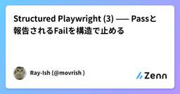

Zennの「QA」のフィード
フィード

[テスト] 良いbug Issueと悪いbug Issue
Zennの「QA」のフィード
🌱 はじめに2026年8月27日に発売された『QAエンジニア入門 〜チームで品質を高める連携のしかた』（岩崎 駿 著）を読みました。bug Issueについて素敵な内容が書かれていたため、備忘録として残します。https://gihyo.jp/book/2026/978-4-297-15832-3自分のためではなく、チームのためのbug Issueだったのでまとめます。また、自分の経験も併せて記載します。 🌱 結論bug Issueには、下記の要素があると良いと思います。!事象再現率再現手順実際の結果期待する結果環境情報ユーザー影響添付資料タイ...
16時間前
AI営業ロープレで、LLMによる発音ガイド抽出をテストしたときの話
Zennの「QA」のフィード
どうも、iinonです。株式会社ナレッジワークでQAエンジニアをしています。今回は、私が担当しているプロダクト『AI営業ロープレ』でLLMを使った機能のテストをした際にまとめた社内向けDevelopers Notesを元に記事を書いてみました。 要約LLMによる発音ガイドの抽出処理をどうテストするか悩んだので、Claude Code にテストデータの設計を依頼したClaude Code から Must / Should / Must Not の3分類による評価アプローチを提案されたので、採用した結果として、LLMの分類・抽出・フィルタ系の処理をテストするなら、Must No...
2日前

AIのテスト観点を「決定論的」にする - テスト観点カタログを作った
Zennの「QA」のフィード
こんにちは！株式会社 Aldagramで業務委託QAをしている宮下です！前回は、Claude Code 上で QA プロセスを回す AI エージェント「qa-orchestrator」を作った話を書きました。https://zenn.dev/aldagram_tech/articles/4aea4b13671ae3今回はその続きになります。qa-orchestrator を運用してみて、いちばん気になっていたのが「仕様書に書かれていない振る舞いの観点が抜ける」ことでした。これに対して、テスト観点カタログという仕組みを考え少しずつ運用を始めているので、何を考えてどう作ったか、そして...
2日前

[AI] 何をQAするのか
Zennの「QA」のフィード
🌱 はじめに2026年8月27日に発売された『QAエンジニア入門 〜チームで品質を高める連携のしかた』（岩崎 駿 著）を読みました。AIのQA（品質保証）に関する記述もあったため、備忘録として残します。https://gihyo.jp/book/2026/978-4-297-15832-3最近は、AIを組み込んだシステムも多くなりました。AIの品質をどのような観点で担保すればよいかを、重点的にまとめます。説明が具体的になるよう社内ヘルプデスクAI（社内規程や手続きの問い合わせに回答する社内向けチャット）を題材にします。!各観点の引用は、すべて本書からの抜粋です...
3日前
AIにQAを任せて、俺はただ椅子に座っているだけにする。
Zennの「QA」のフィード
AIに仕事を奪われかねない Webフロントエンドエンジニアです。最近、QAに協力を仰がなくなる傾向が強くなってきました。理由は、AIに任せた方が速いから です。XCode Simulator や、Android Visual Device、そしてそれらをCLI的に操作できるインタフェース(WebDriverIO) を利用した「QAのAI化」によって、開発体験が強烈に圧縮しましたので、何が起こったか・ツールをどう使っているか・アウトカムがどうなったかを残そうと思います。 QAのしんどさと限界1つのWebフロントエンドのソフトウェアが、複数のOS及びブラウザで動くことを保証するのは...
3日前

Structured Playwright (3) —— Passと報告されるFailを構造で止める
Zennの「QA」のフィード
前回はLocatorの話でした。ほぼPlaywrightの規約に基づいた説明でしたが、「変更に強い落ちにくいテスト」の準備でした、言ってみれば「入口の安定化」です。今回はそれに続いて「出口の安定化」を書きます。AIに書かせていると不都合な実装を度々編み出してきます。FailしているのにPassと判定する（通称偽陰性・偽陽性）などはよく見る事例で、Playwrightの仕様の都合だけでなく、AIの行う抜け穴回避や、その結果生まれてくる「有効ではないテストの発生」をどう減らしていくかはテストの安定性信頼性確保に重要な課題となってきます。Structured Playwrightでは、S...
6日前
E2Eテストの合否判定をAIに任せる「AIテスター」を作った件
Zennの「QA」のフィード
こんにちは！satto workspace で E2E テストを担当している坂本友哉です。前回、中井が書いた Maestro 記事 の最後で、「QA を開発サイクルに組み込む話、テストを自動更新し続ける仕組み（ループエンジニアリング）、AI テスターの育成、Claude in Chrome での手動テスト実行など、E2E チームから順次発信予定です」とお伝えしました。今回はその中の**「AI テスターの育成」に関わる話で、実際に使ってみた結果は別メンバーが書く予定なので、今回は「土台をどう作ったか」**に絞ってお伝えします。 ✅ 今回お伝えしたいことE2E テストが全部 Pas...
6日前
【XP祭り2026】エンジニアにコミュ力を求めるな、と言われて頷いた
Zennの「QA」のフィード
こんにちは！QAエンジニアのAyakaです。2026年9月5日の XP祭り2026 にプロポーザル採択いただいたので、参加してきました。私はオンラインDの13:00枠で「社内ナレッジをAIに読ませて、QAのテスト設計を任せてみた話」を話しました。午前の基調講演、自分の登壇とその直後の1枠までしか聞けていないので、その範囲で刺さった論点を3つに絞って書きます。 その前に：XPを、私は言葉でしか知らなかった午前のオープニングで、XPそのものの入門説明がありました。正直、これがなかったらそのあとの90分は置いていかれてました。私はXPを「ペアプロとかTDDとかをやるやつ」くらいの抽象...
6日前

エラー、欠陥、故障、根本原因とは？
Zennの「QA」のフィード
はじめに今回は、誤用しやすいエラー、欠陥、故障の違いや関係性と、根本原因に関して、私自身も誤用しやすいため、JSTQBに準拠した備忘録としてまとめてみました。正しい意味で用語を理解し、使うことは、コミュニケーションの疎通をスムーズに進める上でとても大切です。 エラーとはJSTQBシラバスでは、下記のように記載されています。人間はエラー（誤り）を起こす。そのエラーが、欠陥（フォールト、バグ）を生み出し、その欠陥は、故障につながることもある。人間は、時間的なプレッシャー、作業成果物、プロセス、インフラ、相互作用の複雑度、あるいは単に疲れていたり、十分なトレーニングを受けてい...
9日前
「動けばよい」から「壊れにくい」設計へ。QA出身SEが学んだ「失敗を先回りする」視点
Zennの「QA」のフィード
はじめにこんにちは！jinjerプロダクト開発部 SEの関根です。今年1月に双子の弟に誘われてjinjer株式会社に入社しました。今回は、開発未経験からSE（システムエンジニア）としてスタートし、前職のQA/QC（品質保証・品質管理）で培った視点を活かすことで、設計段階での手戻りを減らし、スムーズに設計書を作成できるようになったプロセスについて書いていきます。結論からお伝えすると、QA/QCの経験は単なる「テスト工程の知識」ではなく、「要件・設計段階から不具合を防ぎ、品質を作り込むための大きな武器」になります。 プロダクト設計の難しさと、最初にぶつかった壁SEとしてキ...
9日前
MagicPod MCPサーバーとClaude Skillsで実現する、QA定型業務の標準化
Zennの「QA」のフィード
こんにちは、Platform Engineering部 QAの池上です。GENDAではMagicPodを使ったE2Eテスト自動化を複数のプロダクトで運用しています。私はその中で、バッチ実行の結果確認やテスト環境の整備といったテスト自動化関連の業務を主に担当しています。GENDAでは自動テストのツールとしてMagicPodを採用しています。GENDAはM&Aによって取り扱うプロダクトの種類・数が時間とともに増えていく組織で、QA以外の職種のメンバーも含めて誰でも自動テストを実装できる体制を作りたいという狙いがありました。そのため、ノーコードツールであること、また社内で使われている...
10日前
[MGT]要望という名のエピックから考える、ウォーターフォールとアジャイルの要件マッピング（構造編）
Zennの「QA」のフィード
概要 執筆の意図ユーザーストーリーという体裁で提出された要望が、実態としてはエピック相当の大きさだった事例に遭遇したこの事例を構造的に分析すると、ウォーターフォールとアジャイルの成果物対応があいまいなまま運用されていることが根本原因だと考えた本記事では、両手法の成果物・粒度がどう対応するかという静的な構造マッピングを整理する実際に要望がどのタイミングでチケット化されるかという動的なフローについては、続編のフロー編で扱う移行手順（Stage設計）や、要望の原因分解・判定フローの詳細設計は本記事のスコープ外とし、別記事で扱う 要約ウォーターフォールは粒度ごとに独...
10日前
[MGT]要望という名のエピックから考える、要望をチケット化するタイミングの整理（フロー編）
Zennの「QA」のフィード
概要 執筆の意図前回の構造編では、ウォーターフォールとアジャイルの成果物が粒度としてどう対応するかという静的な構造を整理したしかし冒頭で紹介した事例で実際に起きたのは、この静的な対応関係が崩れたことではなかった要望というインプットが本来通るべき精査の工程を経ないまま、いきなり大きな受け皿であるストーリーに流し込まれたことが問題だった本記事では、要望が実際にどのタイミング、どのルートでチケット化されるかという動的なフローを整理する要望の原因分解・判定フローの詳細設計や、移行手順（Stage設計）は本記事のスコープ外とし、別記事で扱う 要約現場の要望がチケットに...
10日前
478件と497件 — 指定していない条件は、揃わない
Zennの「QA」のフィード
同じリリースを数えて、478件と497件自治体向けの業務システムを作っていて、私はそのQAをしています。数か月ごとにメジャーリリースがあり、そのリリースに何が入るのかを、バックログの課題を数えて確認しています。リリース時期ごとにリリースブランチを切っているので、マージ先を間違えると、入るはずのものが漏れたり、まだ完成していないものが出ていったりします。数えているのは、それを防ぐためです。ある日、2つの作業スレッドが、同じリリースについて別の件数を報告しました。片方が478件、片方が497件。同じ課題管理ツールから、同じ日に、同じリリースの課題を数えたはずのものです。どちらもエ...
10日前
テスト見積もりは掛け算2つで出せる
Zennの「QA」のフィード
「だいたい○○ケースくらいですかね」の正体テスト計画でスケジュールを立てるとき、テストケース数の見積もりはどうやっているだろうか。正直なところ、多くの現場では「前回と同じくらいの規模感だから○○ケースくらい」「経験的にこの手の機能なら△△ケース」という見積もりが主流だと思う。自分もそうだった。これで困るのは3つの場面。初めての領域。 過去実績がないから「だいたい」が通用しない説明責任。 上席に「なぜその工数なのか」と聞かれたとき、根拠を示せない精度のばらつき。 見積もる人によって2〜3倍の差が出る結局、見積もりの「勘と経験」の中身を分解してみたら、ちゃんと数式...
11日前
AI活用と自発的な発表で、QAエンジニアのオンボーディング理解を深めてみた
Zennの「QA」のフィード
こんにちは。特撮熱が爆上がり中のbun913と申します。2026年8月より株式会社ナレッジワークでQAエンジニアとして働き始めました。早速ですが、皆さんは「あぁぁ・・・早く業務で役に立ちたい」と思ったことはありますか？私は定期的に思います。今回はオンボーディングが非常に良い株式会社ナレッジワークで、この激動の時代にQAEとして転職した私が、オンボーディングで工夫してやってよかったことや改善できたところをお話ししたいと思います。 さっそくまとめ全体的な思想として「心の中での納得を大事にしながら、効率よくプロダクトの勘所と思想を吸収する」と考え、いくつかの工夫をしながらQAエンジ...
16日前
AIでコード生成が速くなっても、ソフトウェア開発は速くならない――AI時代の開発組織と5つのアーキタイプ
Zennの「QA」のフィード
はじめに生成AI、とりわけClaude CodeやCodexのようなコーディングエージェントによって、ソフトウェアを書く速度は急速に上がっている。しかし、ここには一つ重要な問題がある。コードを書く速度が上がることと、ソフトウェア開発全体のスループットが上がることは同じではない。2026年に報道されたMetaの「Project OT」は、この問題を考えるうえで興味深い事例になった。さらにClaude Code開発を率いるAnthropicのBoris Cherny氏が提示した「AI時代の開発者5つのアーキタイプ」を組み合わせて考えると、AIによってソフトウェア開発組織で何が起...
16日前
捏造禁止ゲートの安全税を自分のパイプラインで4回測った — 観点の件数は減らず、出所の誤りが残っていた
Zennの「QA」のフィード
どーもりょうさんです。自分はQAエンジニアで、普段のテスト設計に生成AI (Claude) を使っています。!ちなみに、この記事の文章自体もClaudeに書いてもらいました。中身自体は見て確認してたり、多少の文の付け足しはしています。この内容の集積自体はAIに調べた上で概要程度の目は通しています。しかしながら、専門家ではないため引用や解釈などが間違っている可能性はあります。あわせて、AIくさい文になっている可能性もあります。 まず「安全税」とは何か生成 AI にハルシネーション対策の指示を強くかけると、何が起きるか。2026 年の実測研究（arXiv:2601.0202...
17日前
週15分「バグに3つの問いを投げる」だけで、テストの先が動き出した
Zennの「QA」のフィード
「テスト＝QA」を卒業したい。でも何から？以前の記事で、テストとQAは違うという話を書きました。テストは「測る」行為です。QAは「良いものが生まれる仕組みをつくる」行為です。勉強にたとえるなら、テストは問題を解くことであり、QAは勉強法そのものを改善することです。反応をもらった中で一番多かったのが、「わかった。で、具体的に何をすればいい？」 でした。正直、自分も最初はそうでした。品質戦略の担当になったとき、「分析しよう」と意気込んでパレート分析やODCの教科書を開きました。でもデータが整っていません。ツールもありません。チームに「分析会議やりましょう」と言っても「その時間ある...
18日前
Structured Playwright (2) —— 変更に強いLocatorの設計
Zennの「QA」のフィード
Structured Playwright固有で「宇宙」という用語を使っていましたが、どうも大仰なのと、Playwrightで普遍的に使われていない用語でわかりにくくなってたので、「宇宙」→「スコープ」の様な汎用的用語に変えました。詳しくは末尾の変更履歴をご参照ください。 はじめに：変更追随性のもう一面この記事はStructured Playwright (1) —— 継続性から設計するE2Eテストの4層構造とハーネスの続編にあたります。前回はE2Eテストを4層に分けて「変更が届く範囲を設計して管理する」話を書きました。ボタンのラベルが変わればPage Objectの1行、手順が変...
23日前